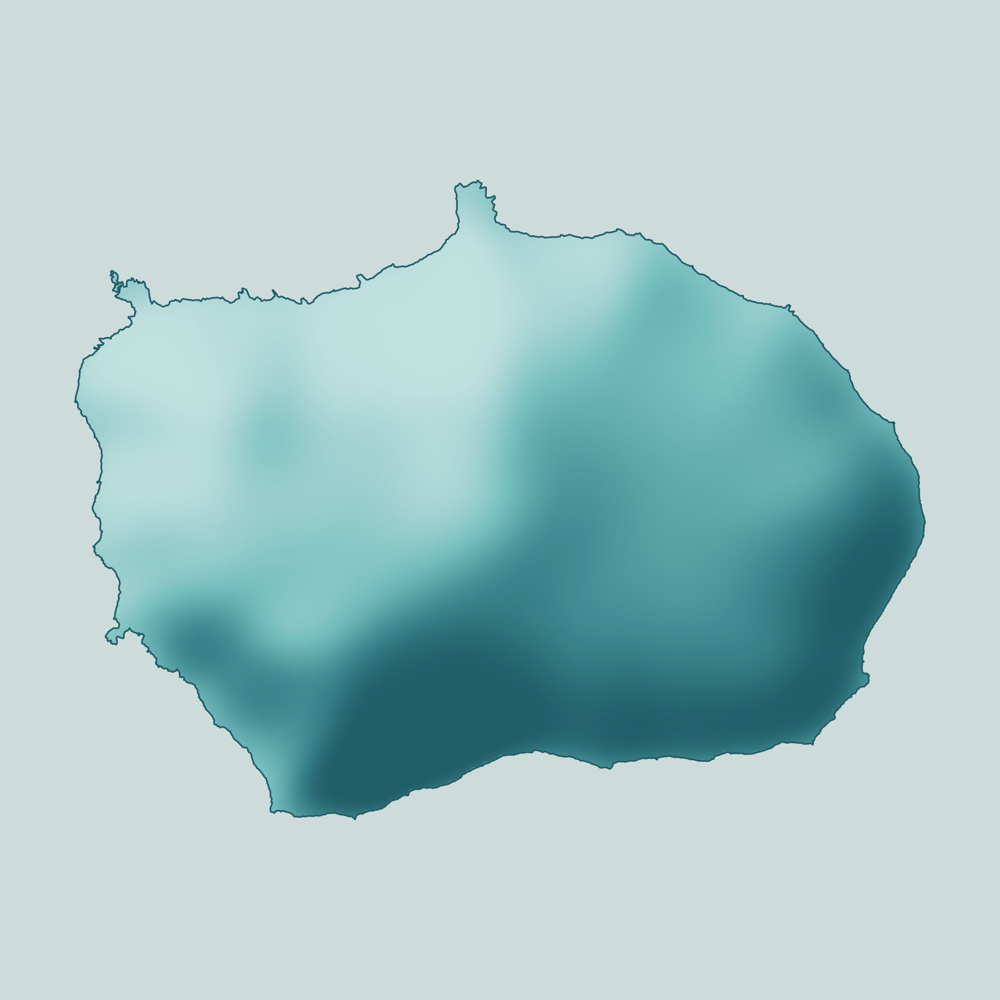
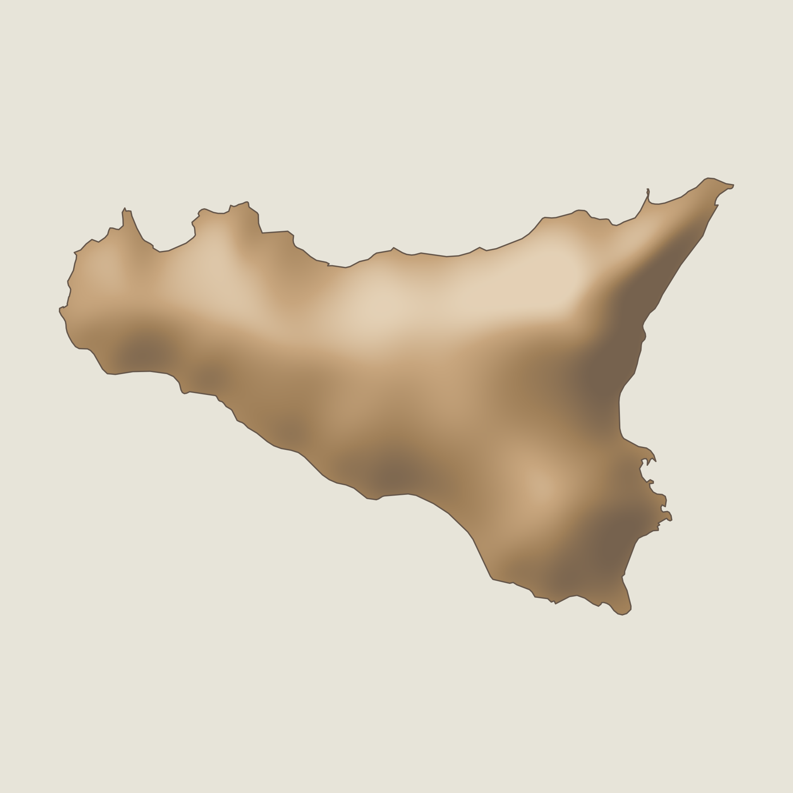

#000001 · Bouvetøya
Stilreferenz · Version wird geladen
Direkter Vergleich der plastischen Gestaltung. Beide Inseln behalten ihre eigenen Farbpaletten. Wähle dieselbe Ausrichtung für einen fairen Vergleich der Schattierungen.


Vergleiche insbesondere die feinen Abstufungen, die Küstenplastik und den Übergang von Flachland zu Gebirge. Entwürfe sind noch nicht für den NFT-Verkauf freigegeben.